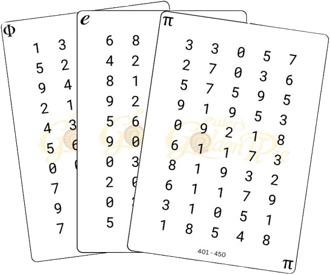
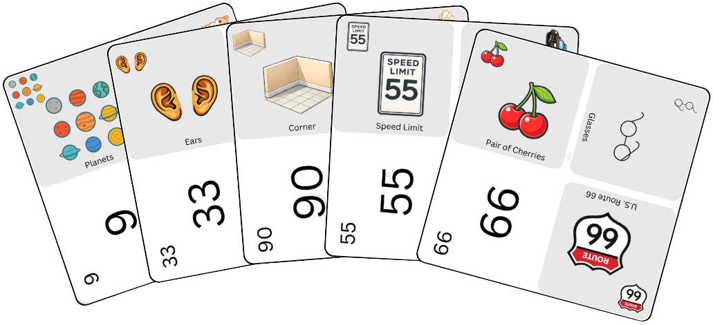

Encode
Convert digits into visual peg cards that represent numbers or number groups.
Build • Encode • Recall
Euler's Golden Pie is a memory-building game that challenges players to convert digits into creative stories and associations, making long number sequences easier to remember and recall.
About the Game
Euler's Golden Pie is a memory game that turns numbers into images, stories, and meaningful connections, helping players memorize and recall long digit sequences while developing creativity and focus.
Convert digits into visual peg cards that represent numbers or number groups.
Connect the peg cards into a story using actions, causes, tools, and consequences.
Decode the story back into the original digit sequence from memory.
The Core Loop
The power of the game comes from transforming numbers into meaningful associations. Instead of memorizing raw digits, players create a story that gives the sequence structure.
Rules
The goal is simple: remember the digit sequence better than your opponent. The challenge is how creatively and accurately you can encode it.
Each player selects a digit card from one of the digit decks.
Players use peg cards to represent the digits in the selected sequence.
Players connect the selected peg cards into a memorable story.
Players exchange digit cards for verification and take turns reciting their sequences.
The player who correctly recalls the greatest number of digits in the original sequence wins.
Components
Euler's Golden Pie uses digit cards, peg cards, and peg stands to make number memory visual and interactive.

Cards containing the digit sequences players must encode and recall.

Visual cards that help players represent digits through images, associations, and story creation.

A stand used to arrange peg cards during the Encode and Build Phases.
A complete layout showing the materials used during gameplay.
Videos
Start with the intro video to learn the game, components, FAQs, and a short sample gameplay. Then watch the full gameplay demonstration.
A short overview featuring the game explanation, components, common questions, and a sample gameplay demonstration.
A complete walkthrough showing the Encode, Build, and Recall Phases from start to finish.
Strategies & Hacks
There is no single correct way to encode a digit sequence. As players gain experience, they often develop their own techniques to reduce the number of peg cards used and build stronger stories.
Euler's Golden Pie encourages creativity. Two players may encode the exact same digit sequence in completely different ways and still arrive at the correct answer during recall.
Instead of encoding 46 as 4 and 6, a player may choose to use a 40 or 44 peg card and remember the remaining difference mentally. This can reduce the total number of peg cards needed.
Sequence: 43, 57, 29, 84
Instead of using separate peg cards for every digit, a player may choose to use nearby anchor cards such as 44, 55, 22, or 88 and mentally remember the small differences.
Example: the words in capitals indicate the peg cards being used.
43 → 40 + 3 → We had a huge PARTY and it extended for three hours.
57 → 55 + 2 → I was stopped by a POLICE car for exceeding the speed limit by 2 MPH.
29 → 22 + 7 → I bought a DOUBLE-DOUBLE coffee and added another 7 creamers.
84 → 88 − 4 → I had a few BUTTERFLIES, but then I lost 4 of them.
This technique can reduce the number of peg cards used while still preserving accurate recall.
Peg cards such as 33, 44, 55, 66, 77, 88, 99, and 100 can serve as memorable anchor points. Players may find it easier to build stories around these cards and mentally adjust nearby values.
If a particular peg card is especially memorable, players can use it as a reference point and mentally account for small differences in value.
Stories are often easier to remember when objects interact. Instead of listing items, try making one object cause an action that affects another object. This creates a stronger memory chain.
FAQ
Euler's Golden Pie (EGP) is a memory game and learning system designed to make memorizing long number sequences faster, easier, and more enjoyable.
Euler's Golden Pie combines memory training, creativity, and friendly competition into a single experience. Players don't simply memorize digits—they transform them into stories, images, and meaningful connections. As players gain experience, they naturally develop their own memory strategies, allowing them to remember longer sequences while creating unique stories along the way.
The youngest person between the two players will go first.
The goal is to memorize and recall increasingly longer digit sequences by converting numbers into memorable images and stories.
During the Encode phase, players observe the digits on the selected card and use their peg cards to convert each digit into a corresponding visual mnemonic.
In the Build phase, players connect these visual mnemonics into a meaningful, vivid, or imaginative story.
During the Recall phase, players attempt to reconstruct and state the original numerical sequence from memory.
After the Recall phase, the winner is the player who accurately recalls the most digits while maintaining the correct sequence order.
If two or more players correctly recall the same number of digits, the tied players continue to the next digit sequence length.
Players may keep their cards visible to all players. The challenge is not remembering the cards themselves, but using them to create effective stories.